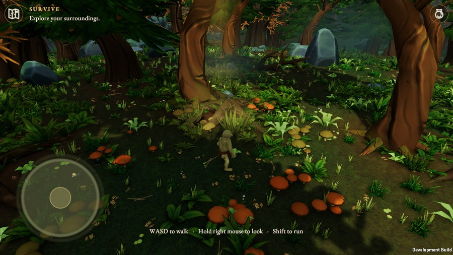
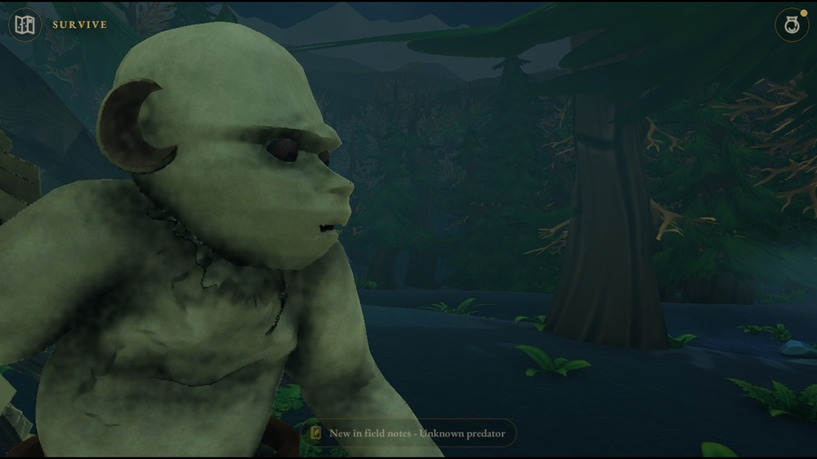
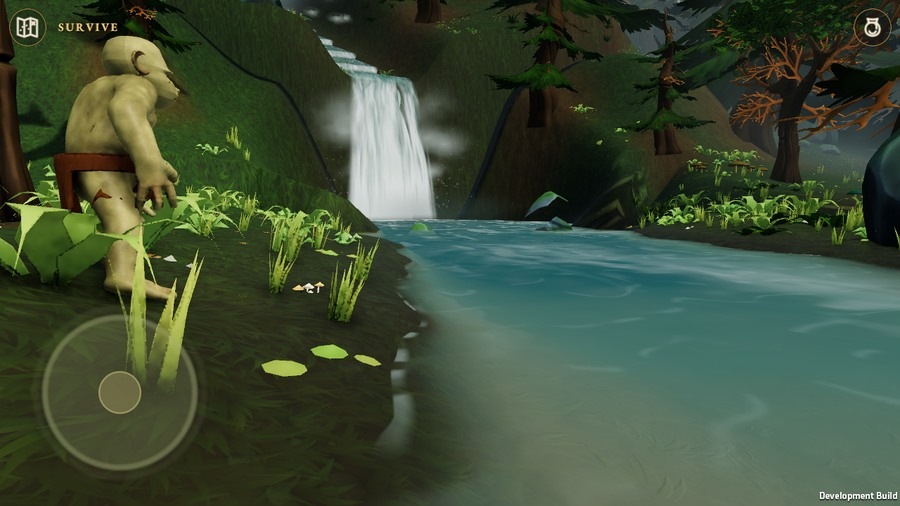
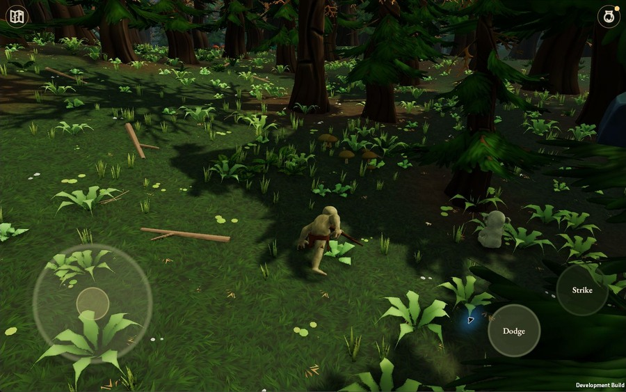

In development
The release date has not been announced.
Windows Beta 0.8.8 / build 33 is the current validated development package. This page is a campaign design presentation.ABOUT THIS GAME
The forest was here before you.
Its roots shape the paths. Its water disappears between stones. Somewhere beyond the familiar trees, something is waiting to be understood.
In The Shadow of a Shnork is an atmospheric fantasy adventure about finding your place in a world much larger than yourself. Explore as the Shnork: a small, expressive creature drawn onward by hunger, danger and an unfolding curiosity.

FOLLOW YOUR CURIOSITY
Walk among towering trunks, tangled roots and a richly planted forest floor. Trace the stream towards its waterfall. The way forward begins with noticing what is around you.

EVERY SHADOW HAS A STORY
Discover the Shnork’s world through encounters, story moments and field notes. Follow the first survival journey into the hunt, its aftermath and a meeting that brings another life closer to yours.

WONDER
Follow flowing water through the Home Forest. Pause over the small details beneath the canopy.

COMPANIONSHIP
A story encounter brings an unexpected companion. This image shows the AI companion, not multiplayer.
ADVENTURE TOGETHER
The development Beta supports private online co-op sessions. Invite another player into an expedition and face encounters together. Story progress and multiplayer visits remain distinct.
Co-op is evidenced in earlier Windows Beta tests. A genuine campaign-quality two-player capture is still required. Public matchmaking, host migration and cross-device support are not promised here.
SYSTEM REQUIREMENTS
OS: To be confirmed
Processor: To be confirmed
Memory: To be confirmed
Graphics: To be confirmed
Storage: To be confirmed
OS: To be confirmed
Processor: To be confirmed
Memory: To be confirmed
Graphics: To be confirmed
Storage: To be confirmed
Windows development evidence does not establish customer minimum specifications. No performance numbers have been inferred from the development PC.
MORE ABOUT DEVELOPMENT
World Beyond is being developed separately. Its existing images are displayed only in the labelled development appendix.